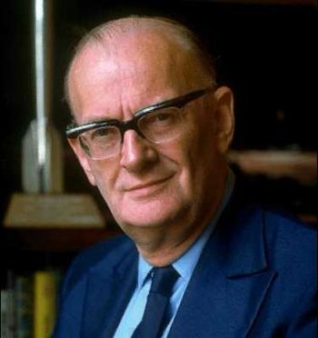

|

Сэр Артур Чарльз Кларк (англ. Sir Arthur Charles Clarke, 16 декабря 1917, Майнхед, графство Сомерсет, Великобритания — 19 марта 2008, Коломбо, Шри-Ланка) — английский писатель, учёный, футуролог и изобретатель, наиболее известен совместной работой со Стэнли Кубриком по созданию культового научно-фантастического фильма «Космическая одиссея 2001» (1968). В 1999 году Кларк получил рыцарское звание (и приставку Sir к своему имени) от королевы Елизаветы II.
Артура Кларка, Айзека Азимова и Роберта Хайнлайна называют «большой тройкой» научных фантастов, как оказавших большое влияние на жанр в середине XX века.
В его честь названа гора Кларк на Хароне.
Темы, стиль и предшественники:
Для работ Кларка характерен оптимистический взгляд на развитие науки и освоение Солнечной системы (а также Мирового океана). Изображаемое им будущее человечества зачастую было утопично, с продвинутыми технологиями, благоприятной экологической обстановкой и стабильной общественной структурой.
Повторяющейся темой в произведениях Кларка является идея о том, что развитие разумных видов в конечном счёте поднимет их на уровень, близкий к божественному. Она была использована в романе «Конец детства» и отчасти затронута в «Земной империи». Эта идея, возможно, возникла под влиянием Олафа Стэплдона, который написал ряд книг схожей тематики. Кларк признавался, что роман «Последние и первые люди» (1930) повлиял на его жизнь сильнее любого другого, и считал его вместе с «Создателем звёзд» (1937) вершиной творчества Стэплдона.
«Законы Кларка»:
В книге «Черты будущего» (в оригинале «Profiles of the Future», 1962) Артур Кларк сформулировал так называемые «законы Кларка», в соответствии с которыми развивается современная наука.
• Первый Закон: Если заслуженный, но престарелый учёный говорит, что нечто возможно, он почти наверняка прав. Если же он говорит, что нечто невозможно, он почти определённо ошибается.
• Второй Закон: Единственный путь обнаружить пределы возможного — уйти за эти пределы, в невозможное.
• Третий Закон: Любая достаточно развитая технология неотличима от магии.
|